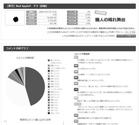

ktty1220
ktty1220
About Me
個人でWebサービスをいくつか運営しています。Webサービスの運営で飯を食べていけるよう修行中です。（達成度0.5%)
Services
Skill
- Node.js
- JavaScript(ES5, ES6, jQuery)
- TypeScript
- CoffeeScript
- HTML5
- CSS3
- PHP(CakePHP)
- Lua
- Perl
- MySQL
- PostgreSQL
- SQLite3
- MongoDB
- Redis
- Apache
- Nginx
- C/C++
- Android App
- Linux(ubuntu, CentOS)
- Heroku
- OpenShift
Contact
Development
Products



 ニコニコ動画コメント@ばっちりサーチ.net
ニコニコ動画コメント@ばっちりサーチ.net
ニコニコ動画に投稿された動画のコメントを分析し、コメントの傾向や動画の評判などを細かく簡単に調べることができるWEBサービスです。(2016-09-01に「ニコニコメント感情分析室」へリニューアルしました)

 今日の空気
今日の空気
【Mashup Awards 9 メタデータ株式会社賞 受賞作品】はてなブックマークのホットエントリーに登録された記事内容の感情解析を行い、その日のネット上の全体的な感情傾向の算出を試みる実験的サイトです。(2015-11-08にサービスを終了しました)

 Kampa! DE プレゼン
Kampa! DE プレゼン
【Mashup Awards 9 デザインエッグ株式会社賞 受賞作品】Kampa!に登録した商品のカンパ募集をアピールするプレゼンスライドを作成できるWEBサービスです。(2015-11-08にサービスを終了しました)

 TwitReplay
TwitReplay
Twitterでつぶやかれたツイートをまとめて、ノベルゲームのような動きのある動画形式で再生できる「リプレイ」を作成し、投稿・閲覧できるWEBサービスです(2014-08-31にサービスを終了しました)。

 トンデモ面接風Q&A
トンデモ面接風Q&A
日頃思っている素朴な疑問を面接官と学生に扮して自由にやり取りできる登録不要のQ&Aサイトです(2015-03-28にサービスを終了しました)。